WORK03 PROJECTS
WORK 0101 / 03
10주 · MUSIC
초등학생부터 어른까지
좋아하는 노래 다섯 곡을, 그 노래를 듣던 시절의 매체에 담았습니다. 카세트에서 VHS로 점점 과거로 들어가다가, 마지막 곡에서 갑자기 지금의 터치 화면으로 돌아옵니다.
사이트 열기 ↗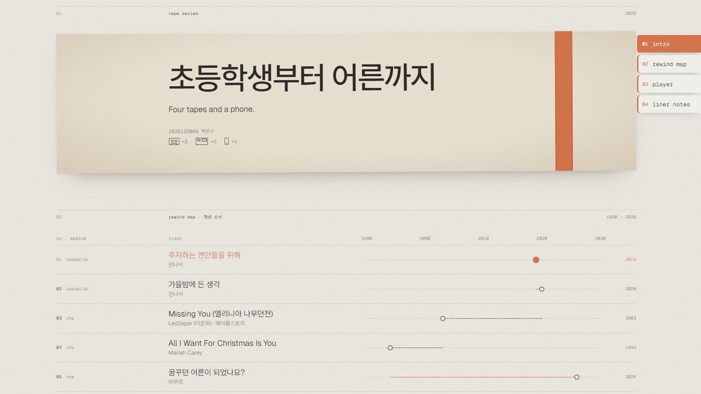
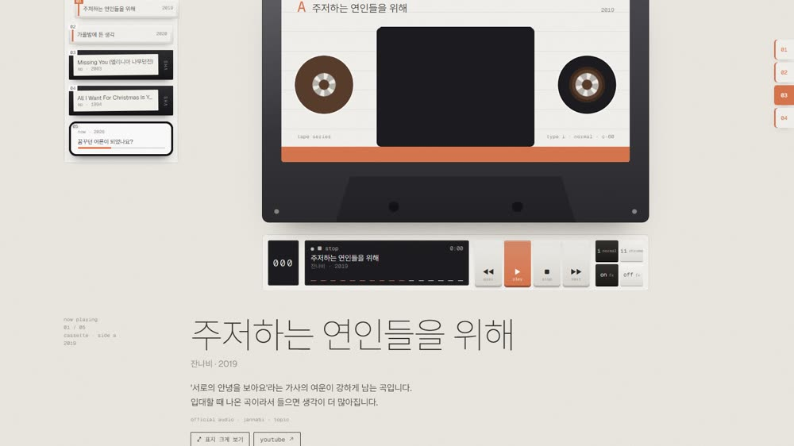
WORK 0202 / 03
11주 · FILM
Afterimage
좋아하는 영화 다섯 편의 장면에서 빛의 색을 뽑아, 불 꺼진 극장으로 만들었습니다. 영화표를 지나면 불이 꺼지고, 스크린의 색이 극장을 물들입니다.
사이트 열기 ↗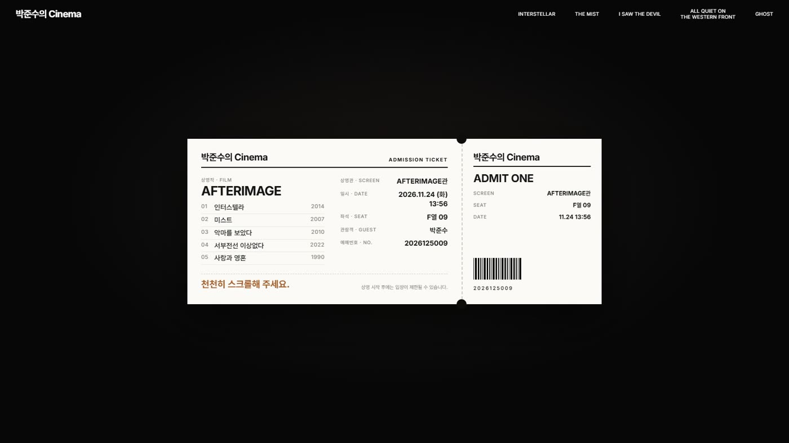
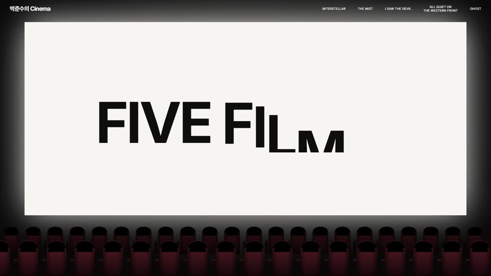
WORK 0303 / 03
12주 · TASTE
바랜 겉면 아래 남은 빛
4주부터 11주까지의 작업을 불 꺼진 전시장에 한 점씩 걸었습니다. 스크롤하면 정의 문장이 떠오르고, 오브젝트에 다가가면 그 작품에만 빛이 켜집니다.
사이트 열기 ↗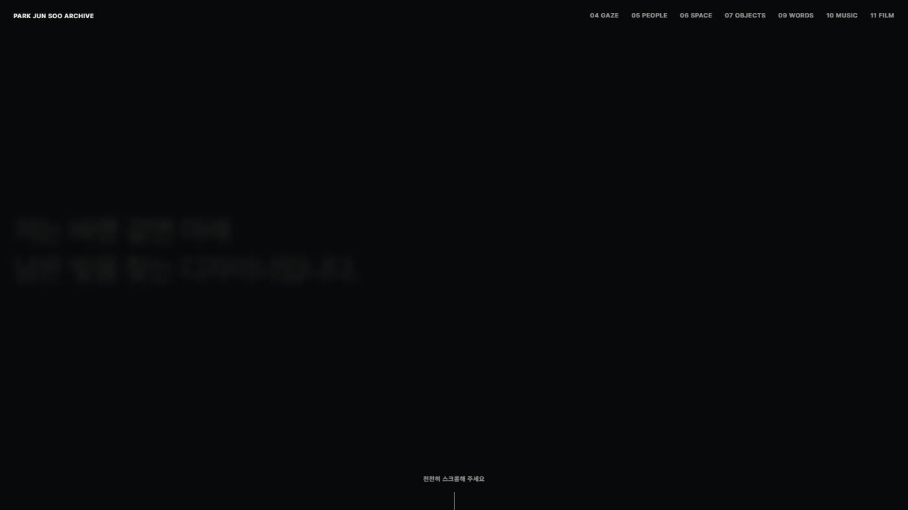
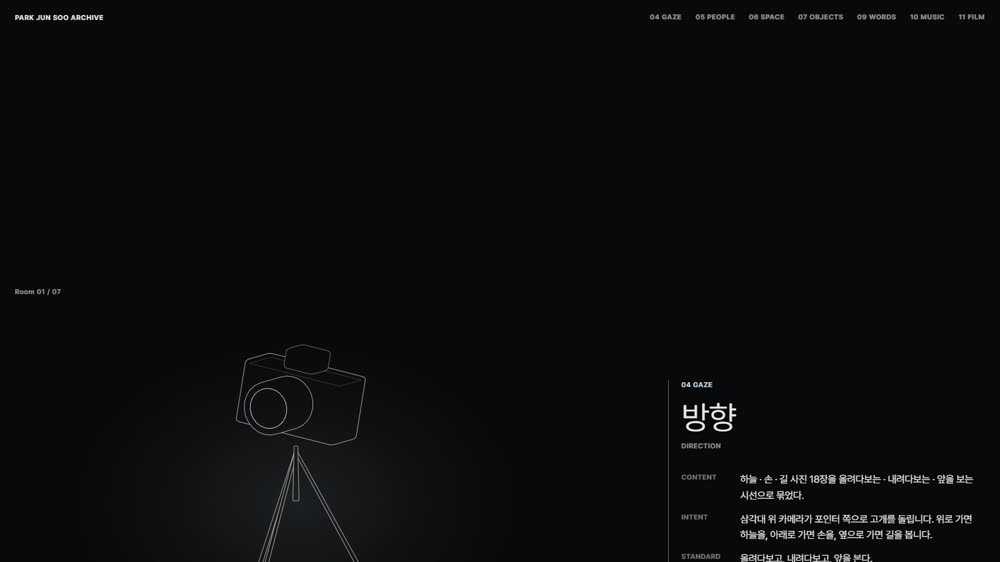
ABOUTPARK JUNSU
한 줄
말 많고,
말 많고,
지금처럼 사는 사람
친구들 말로는 비정상 속에서 그나마 정상인 사람이고, 예전 유튜브 별명 때문에 가끔은 셰프라고 불립니다. 컴퓨터 하고, 자고, 친구 만나 한잔하는 시간을 제일 좋아합니다. 홍보영상 일을 혼자 처리했다가 크게 혼난 뒤로, 중요한 건 혼자 정하지 않습니다.
FRIENDS비정상 속 그나마 정상 · 가끔은 셰프
FAVORITE컴퓨터 · 잠 · 친구랑 한잔
LESSON중요한 건 혼자 정하지 않는다
5 YEARS그냥, 지금처럼만
VIDEO30초 자기소개 영상 — 자막판 ↗
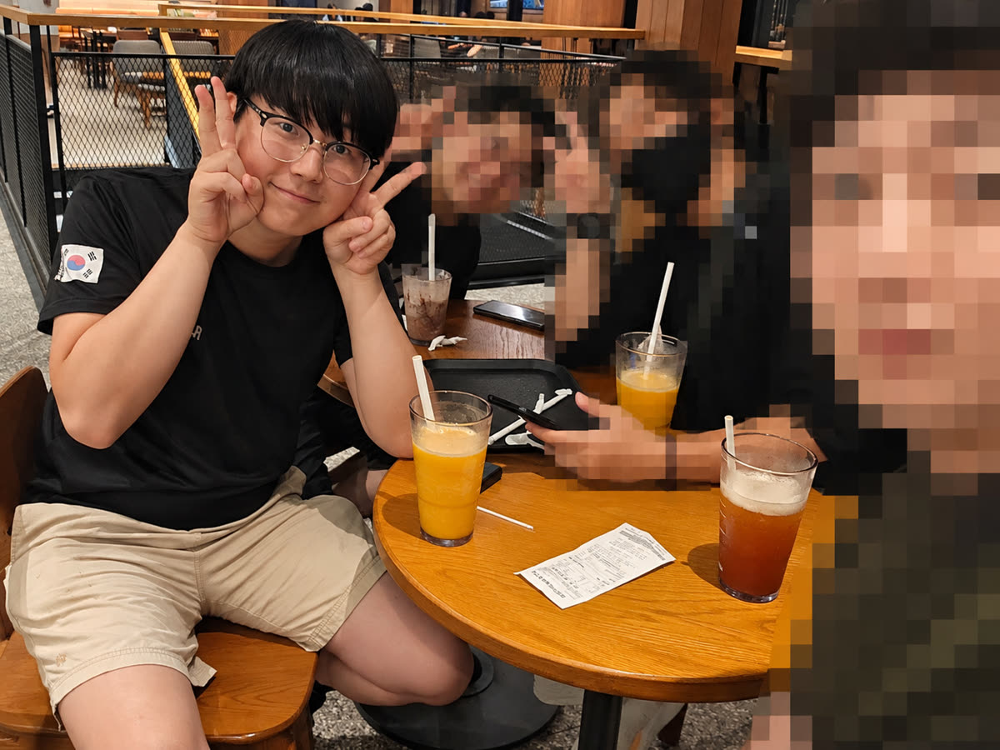
ARCHIVE2020 — 2025
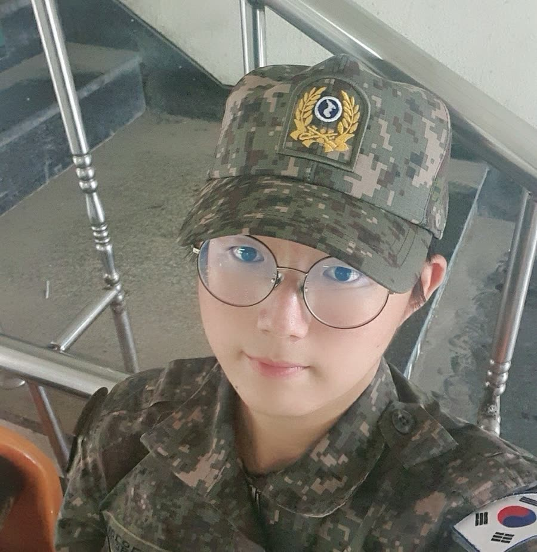
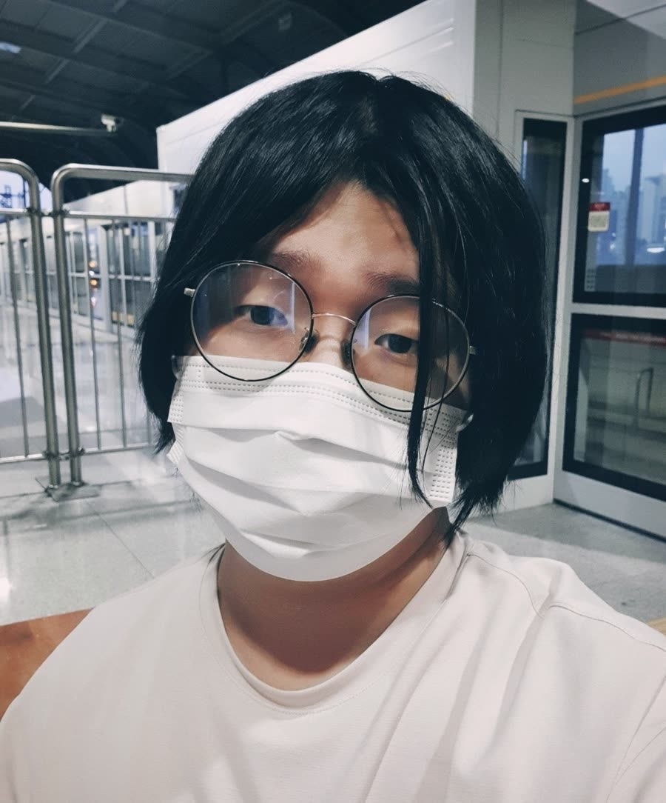
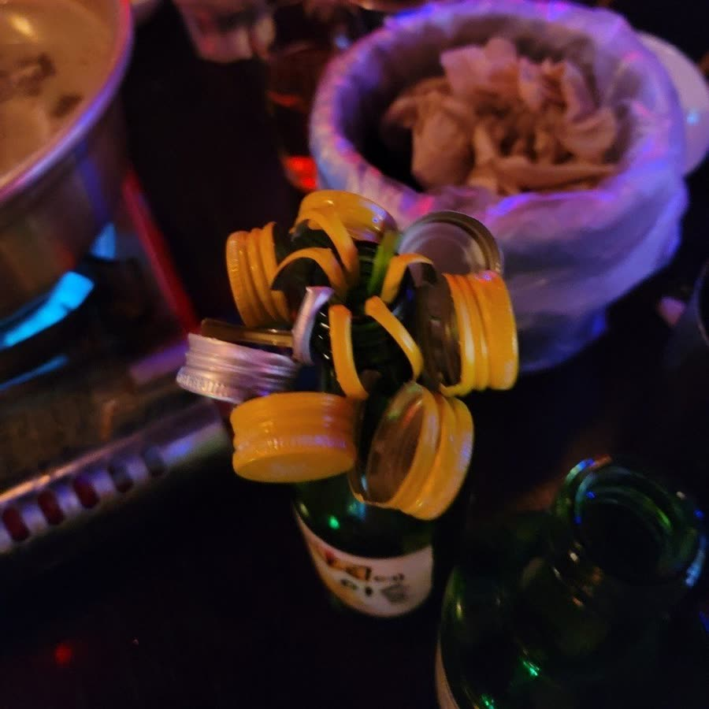
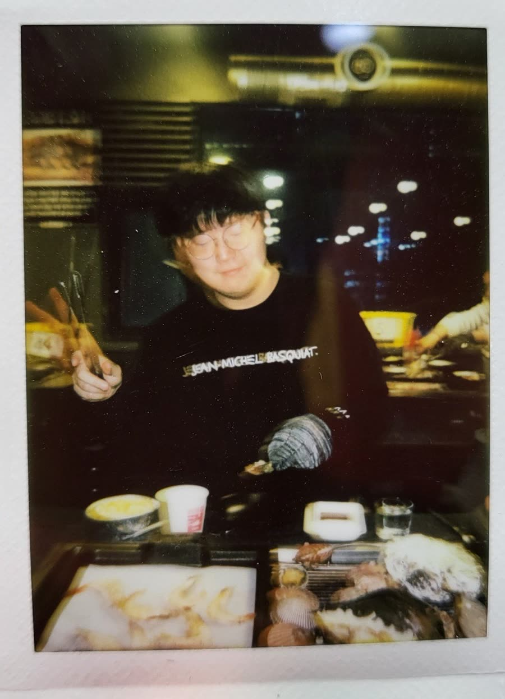